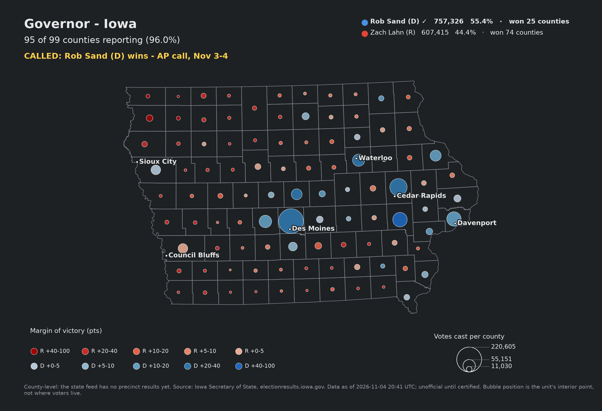
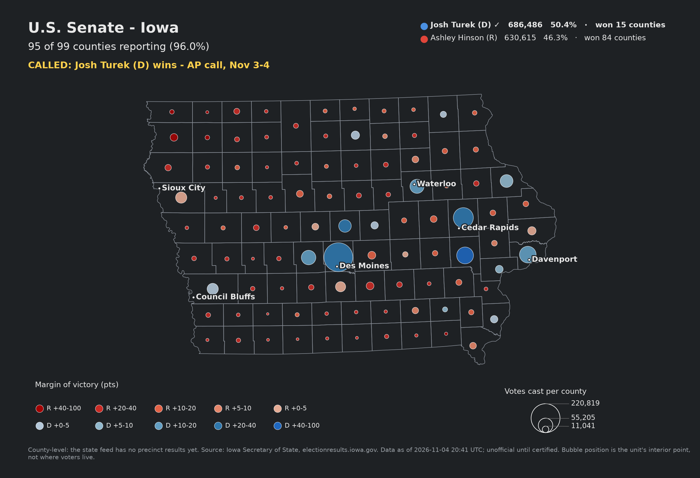
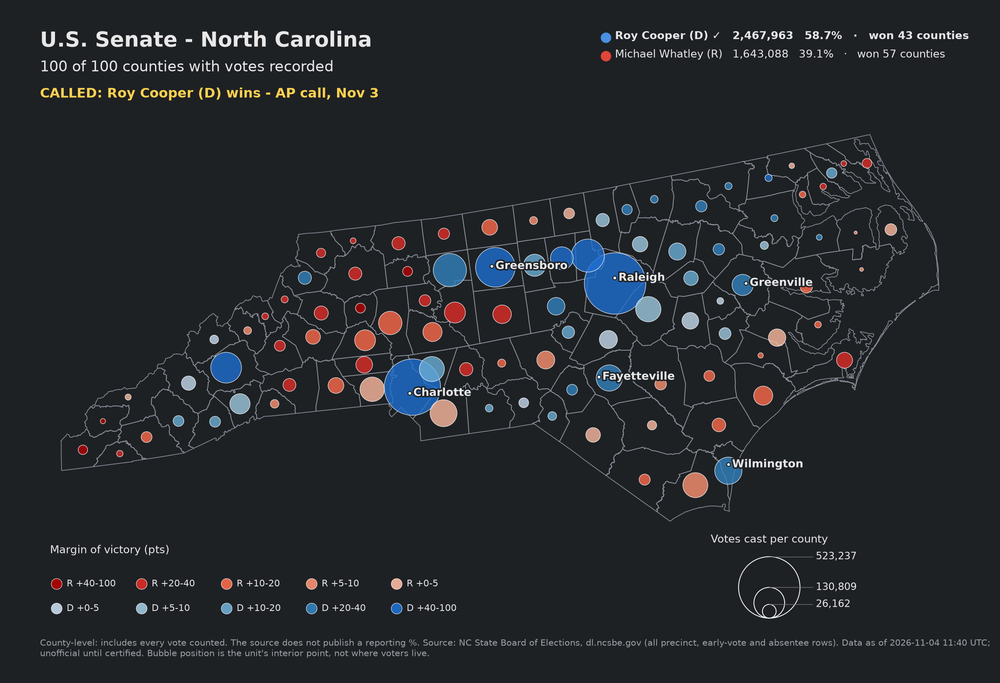
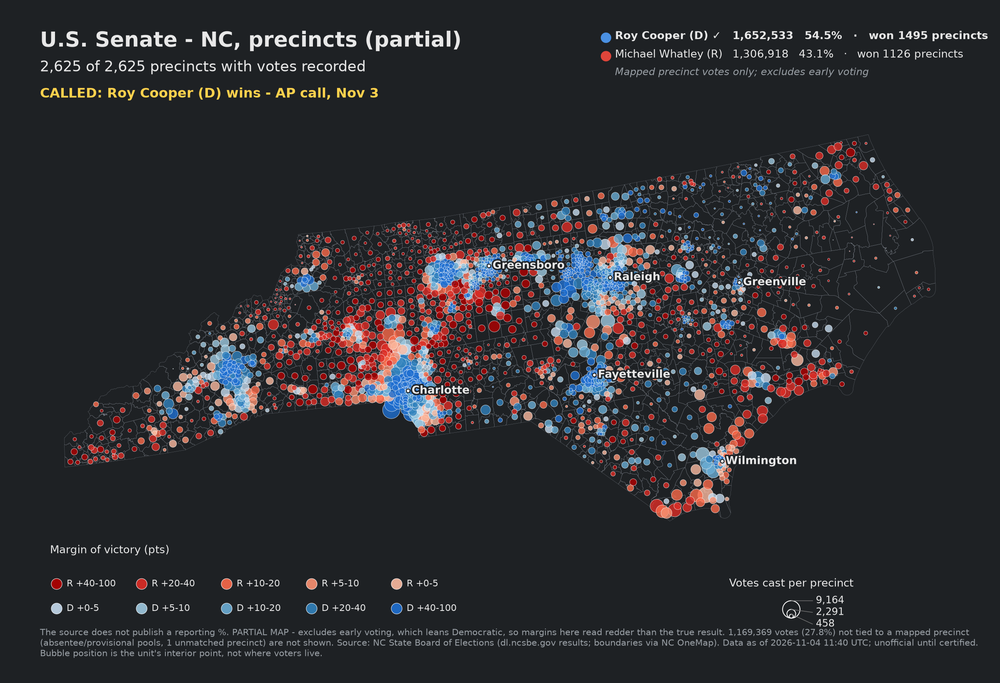
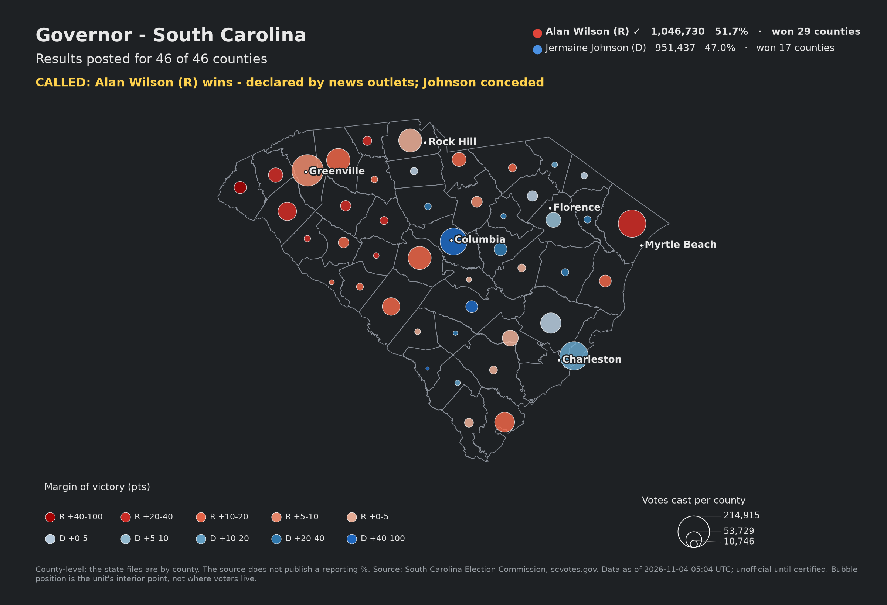
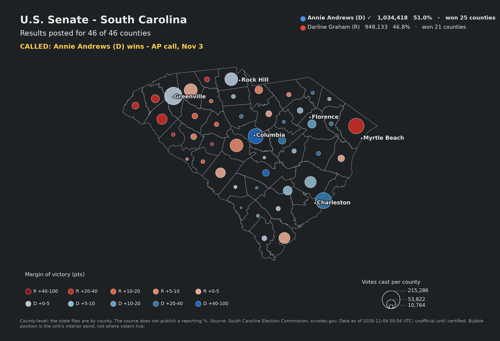

95 of 99 counties reporting (96%)
CALLED: Rob Sand (D) wins - AP call, Nov 3-4
Rob Sand (D) 757,326 · 55.4% · won 25
Zach Lahn (R) 607,415 · 44.4% · won 74
county-level · as of 2026-11-04 20:41 UTC

95 of 99 counties reporting (96%)
CALLED: Josh Turek (D) wins - AP call, Nov 3-4
Josh Turek (D) 686,486 · 50.4% · won 15
Ashley Hinson (R) 630,615 · 46.3% · won 84
county-level · as of 2026-11-04 20:41 UTC

100 of 100 counties with votes recorded
CALLED: Roy Cooper (D) wins - AP call, Nov 3
Roy Cooper (D) 2,467,963 · 58.7% · won 43
Michael Whatley (R) 1,643,088 · 39.1% · won 57
county-level · as of 2026-11-04 11:40 UTC

2,625 of 2,625 precincts with votes recorded
CALLED: Roy Cooper (D) wins - AP call, Nov 3
Roy Cooper (D) 1,652,533 · 54.5% · won 1495
Michael Whatley (R) 1,306,918 · 43.1% · won 1126
precinct-level · as of 2026-11-04 11:40 UTC

Results posted for 46 of 46 counties
CALLED: Alan Wilson (R) wins - declared by news outlets; Johnson conceded
Alan Wilson (R) 1,046,730 · 51.7% · won 29
Jermaine Johnson (D) 951,437 · 47.0% · won 17
county-level · as of 2026-11-04 05:04 UTC

Results posted for 46 of 46 counties
CALLED: Annie Andrews (D) wins - AP call, Nov 3
Annie Andrews (D) 1,034,418 · 51.0% · won 25
Darline Graham (R) 948,133 · 46.8% · won 21
county-level · as of 2026-11-04 05:04 UTC